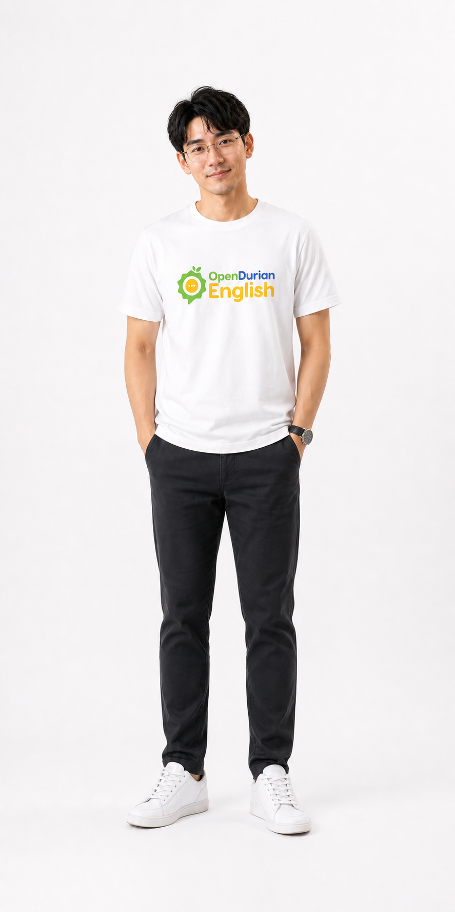
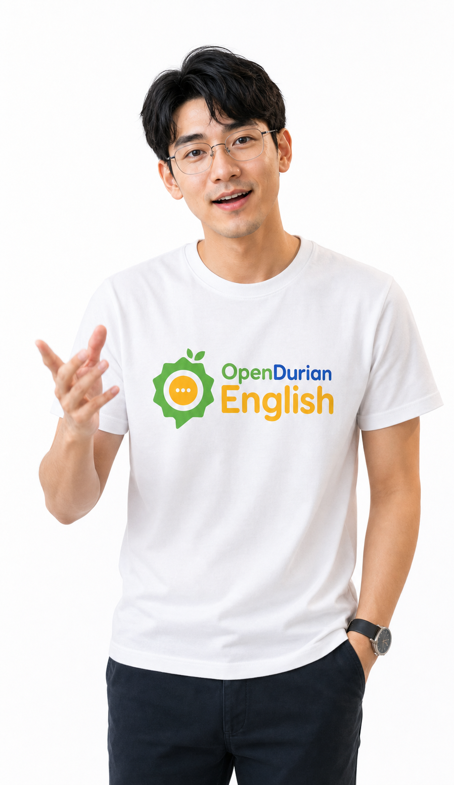
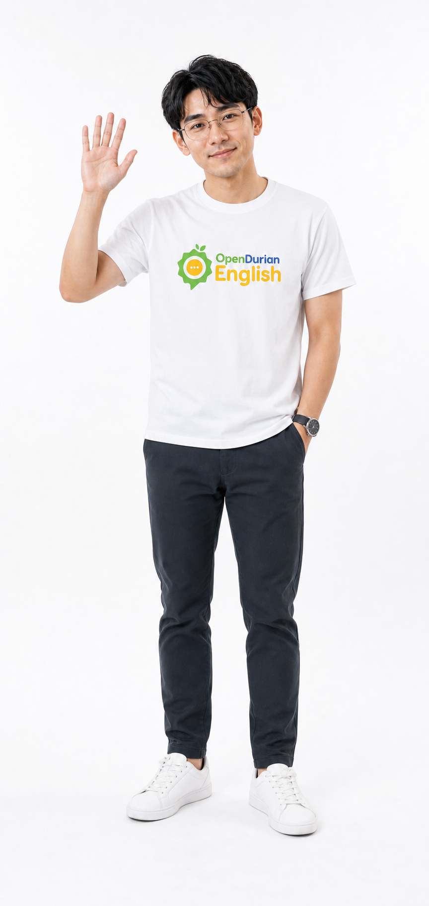
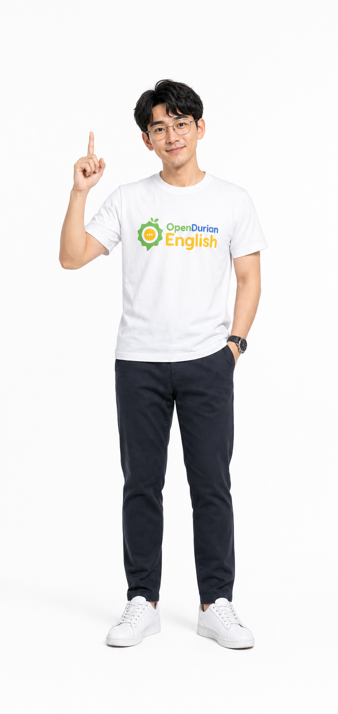
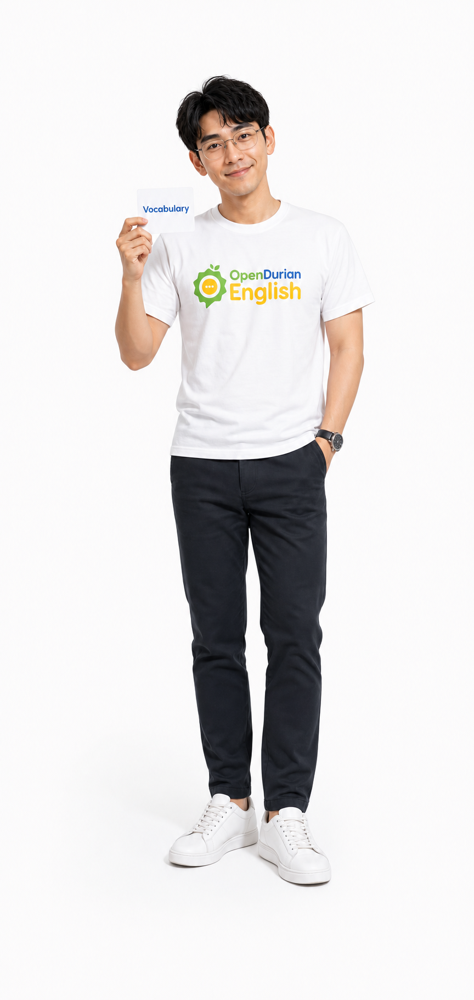
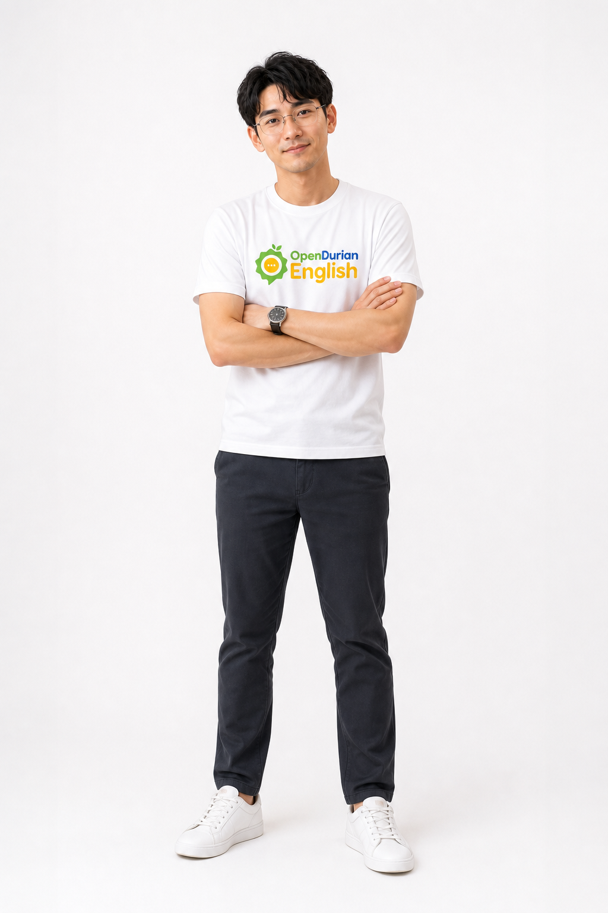

Photoreal Reference Kit
OpenDurian English Teacher
ชุดภาพอ้างอิงตัวละครคนจริงสำหรับทำช่องสอนภาษาอังกฤษบน TikTok ใช้เสื้อสีขาว โลโก้กลางอก พื้นหลังขาว และคุมให้ใกล้ภาพถ่ายจริงที่สุด

Production Shots
6 ภาพแยกท่าสำหรับใช้งานจริง
แยกสร้างทีละช็อตเพื่อลดโอกาสที่ภาพจะกลายเป็นการ์ตูนหรือมาสคอต เหมาะสำหรับใช้เป็นภาพอ้างอิงก่อนทำ thumbnail, cover, talking head และ prompt ต่อเนื่อง
{kind=link}

Waving Greeting
Download PNG{kind=link}

Pointing Teacher
Download PNG{kind=link}

Vocabulary Card
Download PNG{kind=link}

Arms Crossed
Download PNG{kind=link}
Presenter Speaking
Download PNG{kind=link}
Character Lock
กฎคุมตัวละคร
ต้องคงไว้
- ผู้ชายเอเชีย ผมดำแสกกลางนุ่ม ๆ
- แว่นโลหะทรงกลมบาง
- เสื้อยืดสีขาว โลโก้ OpenDurian English กลางอก
- พื้นหลังขาว แสงสตูดิโอสว่าง
- บุคลิกครูสอนอังกฤษที่เป็นมิตรและมั่นใจ
ห้ามใช้
- การ์ตูน, anime, 3D render, mascot
- ผิวพลาสติกหรือหน้าตาเหมือนตุ๊กตา
- เสื้อสีดำหรือฉากห้องเดิมจากภาพต้นฉบับ
- โลโก้ผิดตำแหน่งหรือสะกดผิด
- คนเพิ่ม ฉากรก หรือ watermark
Prompt Lock
คำสั่งตั้งต้นสำหรับสร้างภาพเพิ่ม
ใช้ prompt นี้เป็นฐานเมื่อต้องการสร้างท่าใหม่ โดยเปลี่ยนเฉพาะบรรทัด Pose
Create a highly realistic studio photograph of the OpenDurian English teacher character. Young Asian man, wavy black hair with a soft middle part, round thin metal eyeglasses, friendly natural smile, realistic skin texture, slim-average build. He wears a clean white T-shirt with the OpenDurian English logo centered on the chest, dark casual pants, clean white sneakers, simple wristwatch. Pure white seamless studio background, soft even studio lighting, subtle natural shadow. Pose: [describe one clear pose]. Must look like a real camera photograph, not cartoon, not anime, not 3D render, not mascot, not illustration, not digital painting. Avoid plastic skin, distorted hands, extra fingers, random text, watermark, busy background.
GitHub Ready
โครงสร้างพร้อมอัปเดตขึ้น GitHub Pages
อัปโหลดไฟล์ทั้งหมดในโฟลเดอร์นี้ไปที่ repository เดิม หรือคัดลอกไปทับ root ของ repo GitHub Pages เดิมได้เลย
opendurian-english-tiktok-ip/
ไฟล์หลัก: index.html, styles.css, script.js, README.md, และโฟลเดอร์ assets/